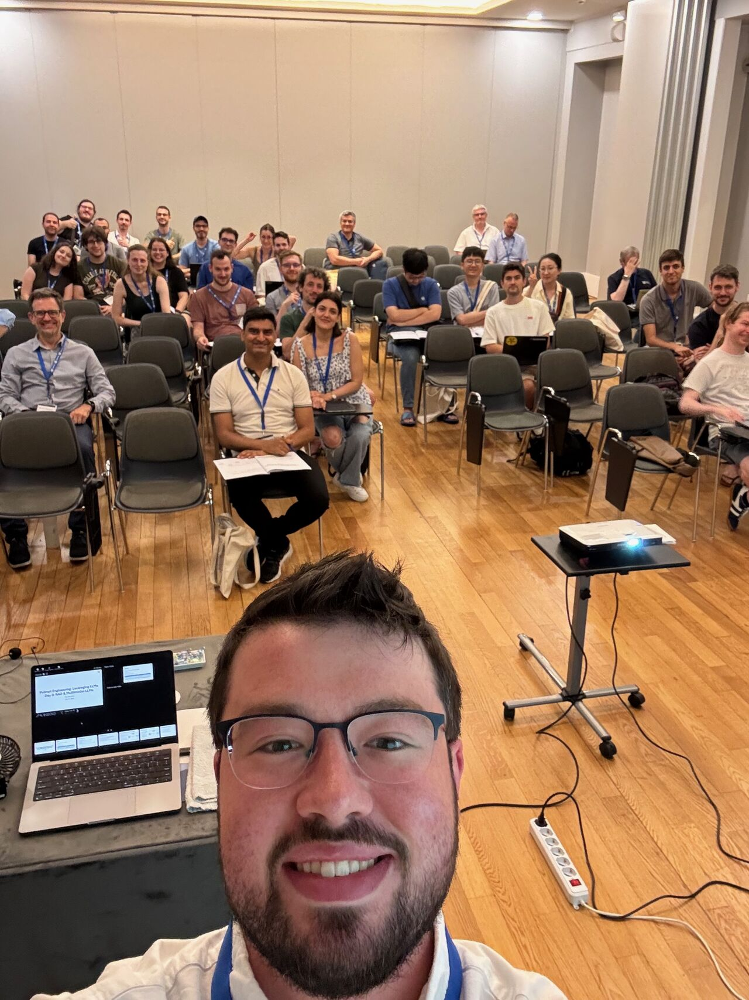
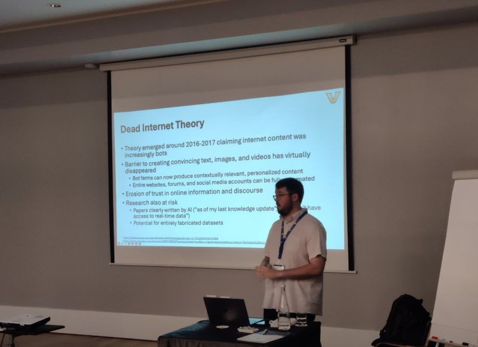

This paper establishes a pattern language for extracting structured data - including names, organizations, locations, keywords, and other typed entities - from unstructured text using large language models. The work develops reliable, reproducible extraction methods that generalize across domains and use cases, providing practitioners with a systematic toolkit for LLM-based data extraction tasks.
Authors: M. Moundas, J. White, DC Schmidt
A comprehensive benchmark of ChatGPT-4 and AutoGen code generation against top-rated human solutions. The paper examines advantages, disadvantages, and practical limitations of applying LLMs to software development tasks - providing concrete, comparative data on where AI-generated code stands relative to expert human programmers.
Authors: A. Elnashar, M. Moundas, DC Schmidt, J. Spencer-Smith
This study presents results from a controlled comparison of runtime performance between ChatGPT-generated code solutions and the top-voted human solutions, across 100 generated solutions. The paper examines the degree to which prompt engineering can close the gap between AI-generated and human-written code in terms of efficiency and correctness.
Authors: A. Elnashar, M. Moundas, DC Schmidt, J. Spencer-Smith
This paper examines the practical decision of whether to rely on LLM-generated code in software development - providing a thorough analysis of the advantages, disadvantages, performance metrics, code quality, and runtime efficiency of AI-generated versus human-written code across a structured benchmark.
Authors: A. Elnashar, M. Moundas, DC Schmidt, J. Spencer-Smith
Survey of AI Guardrail and Protection Systems
Author | Forthcoming
This upcoming paper surveys the landscape of guardrail and protection systems for AI, evaluating the performance of industry-standard approaches against proposed protection systems. The work also analyzes shortcomings in existing evaluation datasets and proposes rigorous methods for testing AI system resilience against adversarial prompting and manipulation - a critical area as agentic AI systems become more widely deployed.
Publication details to be announced.

I taught a 4-day course on prompt engineering and large language models at the ACACES 2025 Summer School in Europe. ACACES is a prestigious program attended by PhD candidates and researchers from universities across the continent, with courses taught by professors and academics from America. Over four days, we covered LLM fundamentals, prompt engineering techniques, retrieval-augmented generation (RAG), multimodal AI, and autonomous agents.

The course gave European PhD candidates hands-on exposure to the state of the art in LLM-based systems - from foundational prompting concepts to the agentic and multimodal capabilities that define where the field is heading. It was an incredible opportunity to contribute to the international AI research community and to learn from the perspectives of researchers working across a wide range of domains.
I presented Vanderbilt's generative AI initiatives alongside my colleague Karely Rodriguez at Notre Dame's 2024 AI Forum - a national gathering of universities sharing how they are deploying and developing AI in academic environments. We showcased Amplify, discussed our approach to cost-effective, open-source enterprise AI, and exchanged ideas with peers from institutions around the country on the transformative potential of generative AI in academia.
I spoke with journalist Lee V. Gaines at NPR about AI and its impact on higher education. The piece aired on NPR's "Up First" and highlights both the opportunities and challenges AI brings to academia - and my own journey from being a stressed college senior worried that AI would take my job, to what the story describes as "becoming one with the machine" as an AI researcher and engineer.